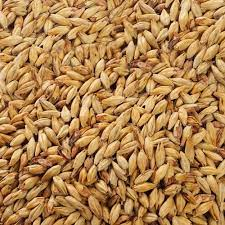
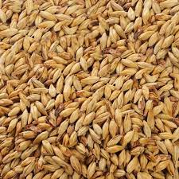
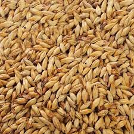

Barley is the fourth most important cereal crop in the world after wheat, maize, and rice. Although generally a temperate crop, barley is also grown in many tropical countries, typically by poor farmers in hostile, dry, cool environments.
Barley (Hordeum vulgare), a member of the grass family, is a major cereal grain grown in temperate climates globally. It was one of the first cultivated grains, particularly in Eurasia as early as 10,000 years ago.[3] Barley has been used as animal fodder, as a source of fermentable material for beer and certain distilled beverages, and as a component of various health foods. It is used in soups and stews, and in barley bread of various cultures. Barley grains are commonly made into malt in a traditional and ancient method of preparation. In 2017, barley was ranked fourth among grains in quantity produced (149 million tonnes) behind maize, rice and wheat.
If you really want to know more about in detail click here. We recommend you to please visit the nearest field, so you can learn from farmers and you can experiene it.

Contact Us
Mail: chidurareddy63@gmail.com